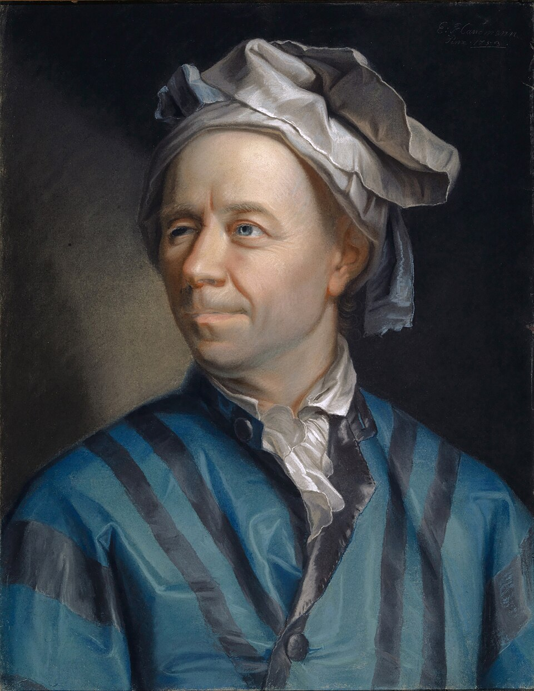

Leonhard Euler (1707–1783)
En 1755 escribe las ecuaciones de un fluido ideal: conservación de
masa y de momento, sin fricción interna. Ahí está ya el esqueleto
∂tu + (u·∇)u = −∇p (densidad 1). El resto del
curso es pelear con ese término convectivo y con lo que falta: la
viscosidad.